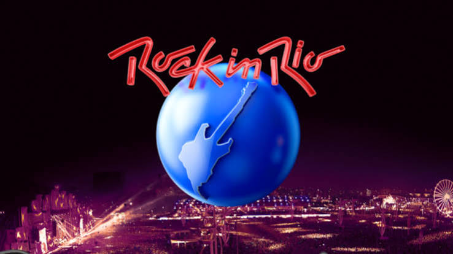
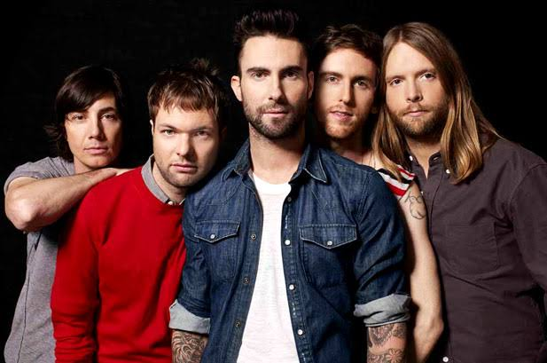
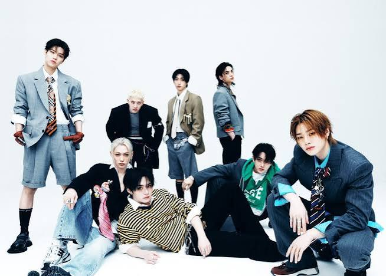
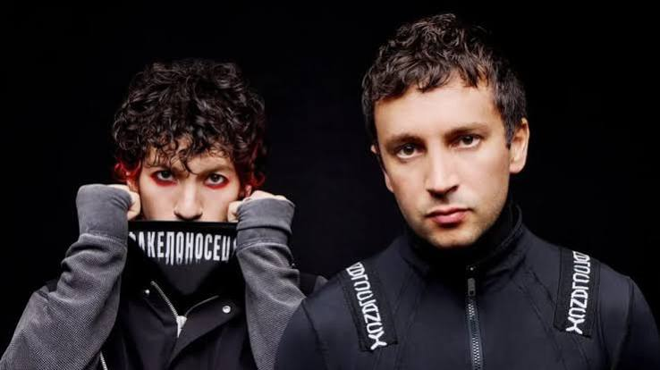
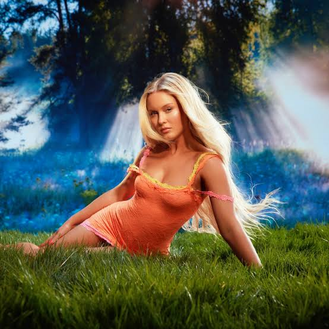
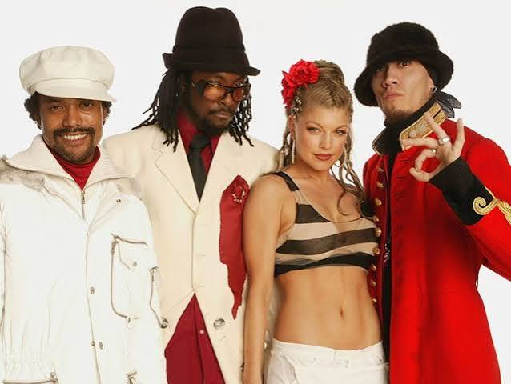
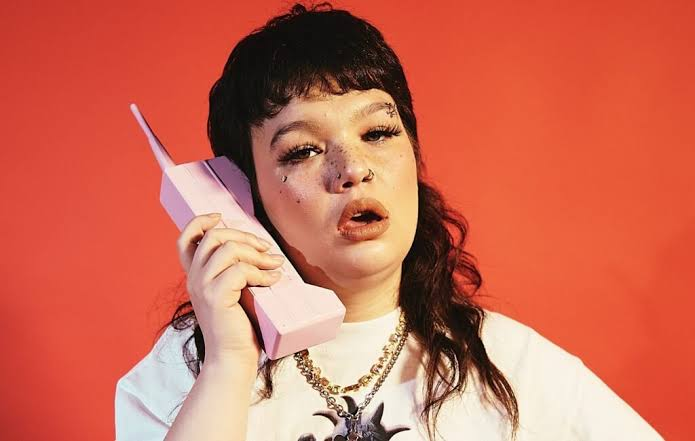

Unidos pela música
Conheça os artistas que vão se apresentar no Rock in Rio em 2026
Grandes nomes da música reunidos em um só lugar, prontos para fazer história e agitar o público no Rock in Rio 2026.
Aprenda com os artistas
Unidos pela música
Grandes nomes da música reunidos em um só lugar, prontos para fazer história e agitar o público no Rock in Rio 2026.

Conheça os artistas

Band americana conhecida por hits como "Moves Like Jagger" e "Sugar".

Grupo sul-coreano conhecido por hits como "God of Music" e "Case Closed".
Produtor e DJ britânico conhecido por hits como "Summer" e "Blame It On The Rain".
Músico britânico conhecido por hits como "Rocket Man" e "Your Song".

Band americana conhecida por hits como "Heathens", "Stressed Out" e "Tear in My Eye".

Artista sueca conhecida por hits como "Lush Life", "Midnight Sun" e "Girl's Girl".
Artista americana conhecida por hits como "Skyscraper" e "Give Your Heart a Break".
Artista colombiano conhecido por hits como "Yo Perreo Sola", "Azul" e "La Cancion".
Artista brasileiro conhecido por hits como "Sequência Feiticera" e "Jetski".

Band americana conhecida por hits como "My Humps" e "Don't Stop the Music".

Artista britânica conhecida por hits como "Messy", "Don't Hate Me" e "All the Time".
Artista brasileira conhecida por hits como "Tudo Bem", "Vai Passar" e "Alegria".